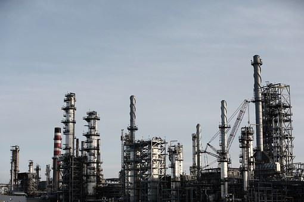

Production Engineering manages the management of various kinds of issues emerging in the business including the development of modern products. The field of production engineering in Germany manages further automation of production cycles and advancement of the techniques required to expand the general production with upgraded quality. This is a broad area that covers Manufacturing Engineering, Production Engineering, Process Engineering, Automation Engineering, and Information Systems alongside Industrial Engineering.
The main job of a production engineer is to work together with experts of all the above regions for growing new products or production cycles to make the development of best quality and at the most economical way. Modules of this study convey the theory of standards of the fields referenced above alongside CAD, Computer Science, specialized planning, material science, and ergonomics’.
Collection of modules includes manufacturing plant arranging, production arranging, production management, production assets, and strategies management, plan, and arrangement of machine devices, metals handling, CNC Engineering, modern operations, venture, and HR the board, shaping innovation, modern coordinated factors, material stream innovation, modern robots, applied software engineering/data frameworks, quality administration, natural security. Contingent upon the picked center review areas (for example production designing or production management).